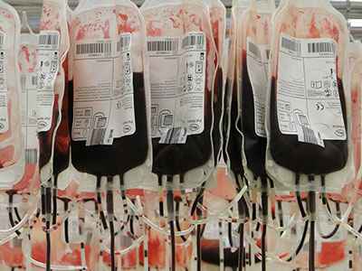

健康
新闻网
发病人数超6亿 防控近视需从机理入手
发病总人数超过6亿，儿童青少年近视率超过50%，呈低龄化、重度化趋势，高度近视发生率持续走高……在近日召开的主题为“近视防控的关键科学、前沿技术与核心政策问题”的香山科学会议上，与会专家深深担忧：近视已成为中国的“国病”，虽然各方面研究工作也取得了一定成效，但距离真正解决近视防控问题还有巨大差距，特别是在儿童青少年眼健康与近视防控的基础科学、临床、工程技术研究以及管理机制创新方面，仍亟待突破瓶颈。
国家组织药品集中采购和使用试点扩围 药价“挤水分”
全国性的药品“团购”，又让药价降了不少。 日前，国家组织药品集中采购和使用试点(下称“4+7”试点)扩围公布中选结果。与扩围地区2018年最低采购价相比，拟中选药品价格平均降幅59%；而同“4+7”试点地区的中选价格相比，此次中选的药品价格平均降了25%。 药价事关民生、牵动民心。“4+7”试点扩围有望为更多地区的患者带来实惠，也为更大范围的“团购”奠定了基础。在政策“组合拳”频出、仿制药提质的背景下，药价有望进入新一轮的下降通道。
世界镇痛日：疼痛是一种疾病 应及时控制和治疗
新华网北京10月14日电（肖寒）国际疼痛学会将每年10月的第三个周一设立为“世界镇痛日”，今年的主题为“全球预防疼痛年”。为了让广大人民群众了解疼痛、认识疼痛，远离疼痛困扰，13日，2019年世界镇痛日·中国镇痛周主题活动新闻发布会在中日友好医院举行。
中国肺癌防治有了专门在线科普平台
新华社北京9月26日电（记者罗争光）即日起，我国民众防治肺癌有了专门的在线科普平台。记者26日从中国癌症基金会获悉，该会发起的“肺越未来”科普平台已正式上线，将利用网络技术为大众提供肺癌防治专业知识。 据介绍，“肺越未来”科普平台设立了多个板块，可帮助医生快速查询国内外肺癌的最新诊疗技术，公众可通过平台了解肺癌的成因、学习远离肺癌的方法以及早诊早治的知识，肺癌患者则可以了解到科学的康复知识、最新的治疗进展以及出院后的用药、随访等信息。此外，平台还提供肺癌护理的技术介绍，并为将来的家庭护理创造条件。

无偿献血者临床用血费用将直接减免
北京青年报记者从国家卫健委官网了解到，经商财政部，国家卫健委决定在全国范围开展无偿献血者及其亲属省内用血费用医疗机构直接减免工作，要全面实现省内血站与用血医疗机构无偿献血者信息互联互通，使医疗机构在费用结算过程中可获取患者及其亲属无偿献血信息，简化手续、精简材料，实行“一个窗口受理、一次性告知、一站式服务”，实现无偿献血者及其亲属省内就医时用血费用出院直接减免，形成“医院直免为主、网上申请减免为辅”的血费减免服务新模式。
事关3亿多高血压糖尿病患者，李克强总理开会定了这些事
近日，国务院总理李克强主持召开国务院常务会议，决定出台城乡居民医保高血压糖尿病门诊用药报销政策，减轻3亿多患者负担。 有关部门负责人会上汇报，目前全国高血压、糖尿病患者约4亿人，均已纳入基本医保保障范围，其中3亿多为城乡居民医保参保人群。 “这不仅有利于保障人民群众生命健康，也有利于提高我国劳动力质量水平，关乎中华民族的未来，必须高度重视。” 李克强总理说。 李克强总理在2019年《政府工作报告》中提出，要做好常见慢性病防治，把高血压、糖尿病等门诊用药纳入医保报销。
北京市卫健委告诉您挂专家号窍门
北京市卫生健康委有关负责人建议患有常见疾病的患者尽量前往基层医疗机构就诊，疑难重症患者可前往二、三级医疗机构就诊，出现严重外伤或心脑血管等方面的急症可拨打急救电话120。随着北京市分级诊疗建设，目前在北京市已经建有60多家医联体，其中包括8家专科医联体，涉及730家医疗卫生机构。医联体内可以实现社区医疗机构与上级医疗机构的双向转诊，实现看病到社区，大病到医院，康复回社区的分级诊疗。经过向上转诊途径，上级医院对患者病情已经基本掌握，可以更快地接受到三级医院专家团队的治疗。